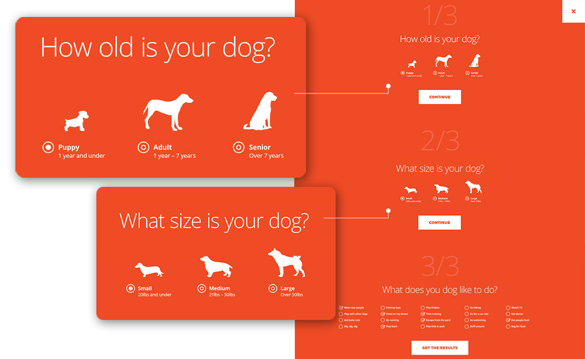
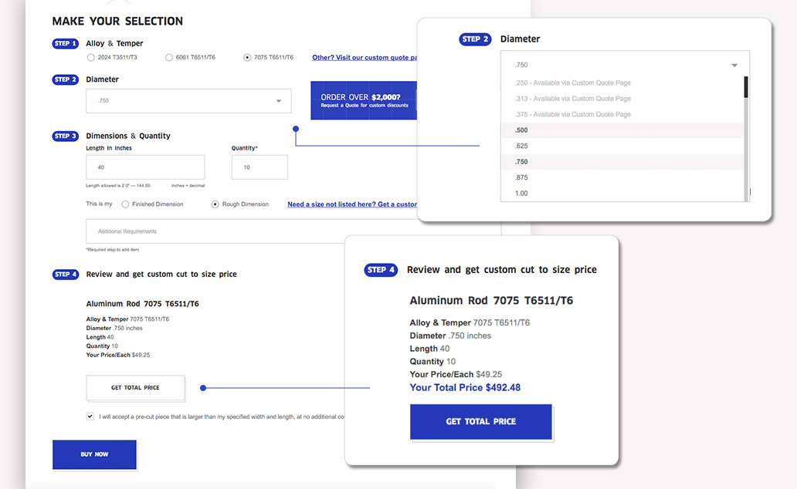

Online forms are a terrific way to funnel prospects through your online sales process. As part of your larger content strategy, online forms should always facilitate conversion by guiding visitors through a specific set of actions. They can take a variety of shapes (newsletter sign up, demo sign ups, configurators, and contact forms). More importantly, they should facilitate the interaction between a brand and a potential customer.
Develop online forms to transform your prospects from listeners to active participants in the conversation about your products and services.
The Consumer Journey
One way to help visitors move painlessly through the buyer’s journey is to incorporate online forms. By adopting form content, businesses gain the advantage of extending the experience customers have with their brand, while also providing value through the journey.
Customers once had little control over the sales funnel. They had a few brands to choose from and based on what they liked or didn’t like about each, they narrowed down the options for purchase. According to McKinsey & Company, that model has been displaced by the consumer decision journey, a path defined by the active evaluation of products and services (often in real time) by consumers. Today, a brand can not only react to customers as they make purchasing decisions, but also actively shape those decision journeys.
For Outward Hound, the maker of innovative dog toys, games, gear & bowls, an online form designed as a simple questionnaire about a visitor’s dog (age, size and characteristics) helps determine a curated list of dog products suitable to the dog’s personality. The form enhances and customizes the visitor’s experience by adding convenience, and fun, to a task that can easily be frustrating and mundane. Meanwhile, Outward Hound collects valuable data about the type of dogs and products potential customers are most interested in, helping to further refine and guide marketing strategy.

Metal and aluminum distributor Future Alloys uses a highly interactive online form to help customers get custom price quotes based on specific project needs. Unlike Outward Hound, which supported customers through the awareness stage, Future Alloys guides them through the product selection and customization stage. Aluminum plates or rods with specific dimensions from an extensive inventory may be purchased online. The dynamic online form considers metal type, shape, resistance, width, length and thickness and the entire process is simplified for easy online purchasing. The online form gives potential customers value by showcasing various product specifications necessary for making a purchase. Once a customer gets to the checkout, Future Alloys has secured the user’s contact information to grow the relationship further based on previous purchases.

Strategic Online Forms
The process of creating an effective online form for your brand begins with outlining specific objectives, a goal and an intuitive process to meet that goal. Use your understanding of the four capabilities to determine what kinds of forms will be useful throughout each stage of the buyer journey as it relates to your brand. Outward Hound’s online form illustrates an example of journey innovation through product curation based on a user’s pet personality. Future Alloys’ advanced online form allows for extensive interaction and automation to customize a product selection and specification. These two strategies are among the four outlined by Harvard Business Review to enhance the customer journey and make that journey more impactful. Understanding these strategies will help guide you towards creating online forms that serve customers in powerful ways. The four strategies are defined as:
- Automation – brands digitize and streamline steps to replace manual processes.
- Contextual Interaction – brands develop an understanding of the customer’s physical or virtual location to attract them to the next set of actions in the customer journey.
- Journey Innovation – brands identify new sources of value through experimentation and customer analysis.
- Proactive Personalization – brands analyze past interactions with a customer to customize their experience.
Be Efficient
Developing an effective online form requires an understanding of your target audience and how much they know about your brand at each stage of their journey. Simplicity in both design and content is important. Ideally you want to gather only what is necessary and avoid excessive options, data fields, menus and copy that can potentially distract customers from engaging with your content. The goal is to collect essential information that will support your sales and marketing strategies.
Below are some tips on making forms more efficient:
- Incorporate Conditional Logic – incorporate functionality that automatically shows or hides form fields, sections, or pages based on the customer’s previous selections.
- Use Field Labels – add static field labels so the customer stays focused on the information they’re supplying, unlike placeholders which can disappear as the customer begins typing.
- Give Hints – provide examples that help customers understand how data should be formatted, i.e. dates.
Online forms are a great way to facilitate the interaction between brand and potential customer. Some forms even go a bit further by providing value to the user throughout the process. But when it comes to lead generation, an online form can be a powerful tool that converts and qualifies leads quickly. It’s also a great way for brands to learn more about engaged participants.